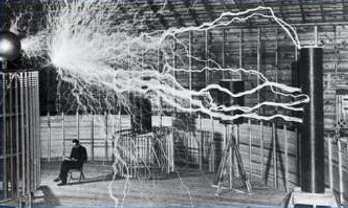
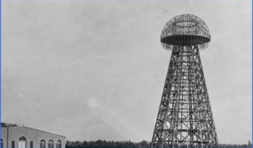

Rođenje
Izumitelj, elektrotehničar, fizičar Nikola Tesla rođen je 9/10. srpnja 1856. godine u mjestu Smiljan kraj Gospića. Potječe iz pravoslavne obitelji; otac Milutin bio je pravoslavni svećenik, a majka Georgina (Đuka) također potječe iz pravoslavne svećeničke obitelji. Imao je tri sestre: Milku, Angelinu i Maricu te jednog brata Danu.
Mladost
Prvo školovanje započinje u rodnom Smiljanu, gdje ide u Krajišku trivaljku. Školu gdje se uči njemački jezik, računanje i vjeronauk. Nakon toga odlazi u Gospić, gdje ide u pripremnu osnovnu školu i nižu realnu gimnaziju. Iz Gospića odlazi u Rakovac u Karlovcu, gdje završava višu realnu gimnaziju. U Grazu upisuje studij na Visokoj politehničkoj školi sa stipendijom Vojne Krajine. No, nakon ukidanja stipendije radi razvijanja ove Krajine Nikola ne uspijeva završiti drugu godinu studija te se odaje kockanju. Kako bi nadoknadio taj financijski gubitak, ne uspijeva pa odustaje od studija prije treće godine.
Posao

U Parizu Tesla radi za Edisonovu tvrtku (Continental Edison Company) te 1882. godine u Strasbourgu konstruira prvi model indukcijskog motora. Nakon povratka u Pariz Tesla dobiva preporuku Charlesa Batchelora i 1884. godine odlazi u New York, gdje se zapošljava u Edisonovoj tvrtki. Nakon nesuglasica s Edisonom 1885. godine Tesla osniva vlastitu kompaniju Tesla Electric & Manufacturing Company. Godinu kasnije mu tvrtka propada, pa se uzdržava prodajom električnih patenata. Godine 1887. Tesla osniva Tesla Electric Company i prijavljuje patente: višefazni sustav prijenosa električne energije, indukcijski motor, generatore i transformatore. Godine 1888. Tesla ulazi u partnerstvo s Georgeom Westinghouseom i prodaje mu patente na bazi izmjenične struje za milijun dolara, no međutim dobio je oko 60.000 dolara.
Smrt
Edisonovu medalju (najveće priznanje Američkog društva elektroinženjera) je dobio 1917. godine, a 1926. godine je postao počasni doktor Sveučilišta u Zagrebu. Godine 1937. dobiva počasni doktorat Politehničke škole u Grazu i Sveučilišta u Parizu. Tesla je preminuo u hotelskoj sobi gdje je umro.
Iako moram svoju inventivnost zahvaliti majčinu utjecaju, vježbe koje mi je otac davao bile su veoma korisne. Sadržavale su mnoštvo zadataka, npr. pogađanje tuđih misli, otkrivanje raznih grešaka ili izraza, ponavljanje dugih rečenica ili računanje napamet. Te su mi dnevne vježbe imale ojačati pamćenje i razum, a posebno razviti kritičnost i bile su nesumnjivo veoma korisne. Moja majka potjecala je iz jedne od najstarijih obitelji ovog kraja, koja je u sebi nosila izumiteljsku žicu. I njezin otac i njezin djed izumili su mnoga pomagala za kućanstvo, zemljoradnju i za druge svrhe. Uistinu je bila velika i izuzetno sposobna žena, hrabra i postojana, svladavala je životne oluje i izvukla iz njih mnoga iskustva

